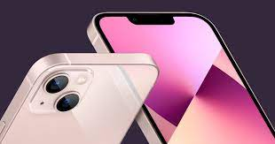

Las tablets se han convertido en un dispositivo versátil y práctico que nos ofrece una amplia gama de beneficios. Estas pantallas táctiles portátiles combinan la funcionalidad de un teléfono inteligente con la comodidad y el espacio de visualización de una computadora portátil. Una de las ventajas más destacadas de las tablets es su portabilidad. Su diseño delgado y liviano nos permite llevarlas a cualquier lugar, lo que las convierte en un compañero ideal para viajes, reuniones o simplemente relajarnos en el sofá. Además, las tablets ofrecen una experiencia de visualización inmersiva. Con pantallas de alta resolución y un tamaño más grande en comparación con los teléfonos inteligentes, podemos disfrutar de películas, juegos y contenido multimedia con mayor comodidad. También son ideales para navegar por Internet, leer libros electrónicos y ver noticias, ya que nos permiten ver el contenido de manera clara y sin tener que hacer zoom constantemente. Otra ventaja importante de las tablets es su capacidad multitarea. Con la opción de ejecutar múltiples aplicaciones en pantalla dividida o con la función de ventanas flotantes, podemos realizar varias tareas al mismo tiempo, como redactar un correo electrónico mientras vemos un video o consultar información mientras tomamos notas. Esto nos brinda una mayor productividad y eficiencia en nuestras actividades diarias.
Los celulares de nueva generación han revolucionado nuestra forma de comunicarnos y acceder a información. Estos dispositivos están equipados con tecnología de vanguardia que nos permite realizar tareas de manera más eficiente y mantenernos conectados en todo momento. Una de las principales ventajas de los celulares de nueva generación es su potencia y rendimiento. Con procesadores más rápidos y mayor capacidad de memoria, podemos ejecutar aplicaciones y juegos con fluidez, realizar múltiples tareas simultáneamente y almacenar una gran cantidad de archivos, fotos y videos sin problemas. Otro beneficio importante de los celulares de nueva generación es su calidad de pantalla. Con pantallas de alta resolución y colores vibrantes, podemos disfrutar de una experiencia visual inmersiva al ver películas, jugar juegos o navegar por Internet. Además, muchos de estos dispositivos están equipados con tecnología de pantalla táctil y reconocimiento facial, lo que hace que su uso sea más intuitivo y cómodo. Además de estas características, los celulares de nueva generación también ofrecen mejoras significativas en términos de conectividad. Con soporte para redes móviles de alta velocidad, como 5G, podemos descargar archivos pesados, transmitir contenido en alta definición y participar en videollamadas de alta calidad sin problemas de conexión. También cuentan con capacidades de Wi-Fi mejoradas y la posibilidad de compartir fácilmente nuestra conexión a Internet con otros dispositivos. En resumen, los celulares de nueva generación nos brindan una experiencia tecnológica avanzada con su potencia, rendimiento, calidad de pantalla y conectividad mejorada. Estos dispositivos nos permiten aprovechar al máximo nuestras actividades diarias, ya sea trabajando, estudiando, divirtiéndonos o manteniéndonos en contacto con nuestros seres queridos.